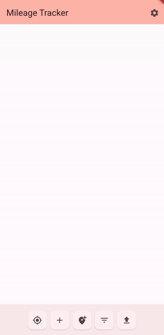

SP06-red: Trip Logger
Overview | The Group | Presentation Video | Project ReportApp Overview
Trip Logger provides an intuitive approach for users to track their trips in real time using their device’s GPS. The app is built with Flutter to ensure straightforward cross-platform functionality and consistent UI elements.

Feature List
- GPS Distance Tracking
- Auto-tag based on start and end locations
- Robust filtering mechanisms
- Data kept locally
GitHub Repository
Repository Stats:
- 1155 lines of code
- 102 commits
- 22 Pull Requests
- 9 Open issues; 10 closed
CDay
This project one of few which where selected from all undergraduate capstones to be presented at the KSU CCSE showcase event, cday.